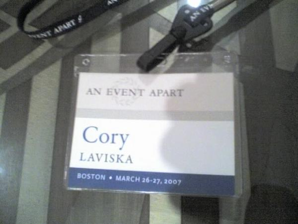
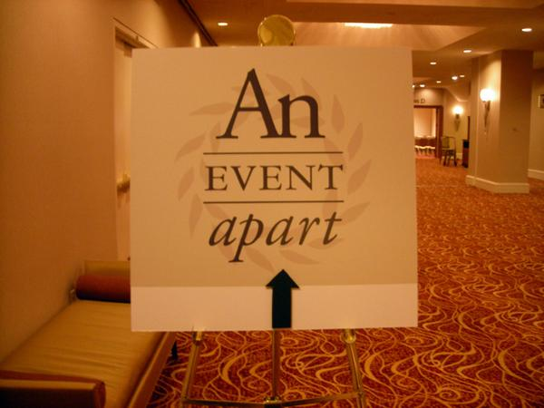

An Event Apart, Boston

Heads up! This post was written in 2007, so it may contain information that is no longer accurate. I keep posts like this around for historical purposes and to prevent link rot, so please keep this in mind as you're reading.
— Cory
The plane took off from Orlando as I sat half asleep in my seat. With my laptop at my feet, I wondered what kind of intriguing things I would learn at the web conference I had signed up for. I anticipated this day for months now and it was finally here. I was on my way to An Event Apart, Boston. Wow!
I have always been an avid reader of A List Apart. They never fail to produce really great articles in regards to every aspect of web design. When I first saw an advertisement for An Event Apart online, I was stoked. I gathered all the information possible and practically begged my employer to fund the trip. A few weeks later, it was said and done. On March 26th and 27th I was in Boston listening to some of the web's greatest voices. It was awesome. No, that's an understatement. It was incredible!
The hotel #
The conference was held at the Marriott Copley Place, where I stayed on the 33rd floor. The rooms were very nice, the food services were excellent, and the location was perfect — walking distance to anything you could possibly need and a Shaw's 24-hour supermarket across the street. Nice.


Day 1 #
On the first day I got to put some familiar names with faces. Specifically Jeffrey Zeldman (zeldman.com), Eric Meyer (meyerweb.com), and Dan Cederholm (simplebits.com). Other speakers who spoke that day were Jason Santa Maria (jasonsantamaria.com) on design, Steve Krug (sensible.com) on usability, and Andrew Kirkpatrick (Adobe) on accessibility.
Lunch was sponsored by Adobe and the opening night party was sponsored by Media Temple at Restaurant 33. I hear everyone had a killer time, but due to a stomach bug I wasn't able to attend the party. ~ sigh ~
I did get a chance to speak with Dan Cederholm, however. He signed my copy of Bulletproof Web Design and we talked briefly about running a web design business. Dan's a great guy. His willingness to talk with you and his attitude towards those who are interested in the web really impressed me. I hope I have an opportunity to meet with him again in the future.
Day 2 #
On the second day I got to meet Molly E. Holzshlag (molly.com), who has authored over 30-something books about the the web and currently works for Microsoft. Specifically, on the IE7 team. Her speech was entitled, "Building Better Browsers". After she spoke, I had a chance to meet with her one-on-one for a while. We talked about some of the issues that Microsoft had to face to get IE7 up to speed with the web standards movement. In a nutshell, I'm happy to say that my opinion of Microsoft's recent efforts to improve IE7 has changed for the better. She also assured me that gamma corrections in PNGs is "on the way". That put a smile on my face.
Other speakers on Day 2 included Cameron Moll (cameronmoll.com) on design, Ethan Marcotte (sidesh0w.com) on web standards, Eric Meyer on CSS and IE7, and Jeffrey Zeldman on selling design.
We wrapped up the second day with critiques. A lot of people submitted websites to be critiqued by the speakers, but only a handful were chosen to be reviewed. I didn't submit a site for this...I don't know why.
Afterthoughts #
An Avent Apart was an experience I won't soon forget. It was worth every penny (even if I had paid for it out of my own pocket). Next time, I think it would be good to see a bit more on design and possibly some hands-on activities. I really liked having the opportunity to meet some of the speakers in person. It was also nice to find out that my understanding of good web practice was on par with the rest of the world.
A special thanks goes out to all the speakers from An Event Apart, Boston.